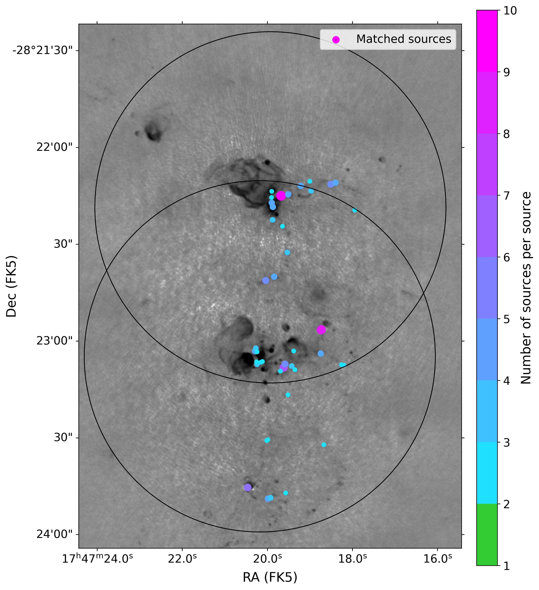

- To move slides, use the arrow keys or swipe on your mobile device
- To see the speaker notes, press "s"
- To go to full screen, press "f"
- To print as PDF, go to this URL: ?print-pdf, then print.
- To get a PDF with speaker notes, add ?print-pdf&showNotes=true to the URL.
A substantial history of papers on star formation and kinematics in the Brick...
(these are just the papers with G0.253 in the title)
- Kauffmann+ 2013 SMA, CARMA: Low star-forming potential
- Clark+ 2013 theory: temperature structure
- Rathborne+ 2014, 2015 MOPRA, ALMA: density structure, chemistry
- Johnston+ 2014 SMA, IRAM: temperature, kinematics
- Marsh+ 2016 Herschel: dust temperature
- Federrath+ 2016 theory: turbulence, kinematics
- Henshaw+ 2019 ALMA: kinematic structure
- Walker+ 2021 ALMA: star formation
- Henshaw+ 2022 ALMA, multiwavelength: feedback
- Petkova+ 2023 theory: chemistry
- Ginsburg+ 2023 JWST: ice
- Sofue 2024 Nobeyama: feedback


Walker+ 2021



So is Cloud C


Savannah Gramze

NGC 3551 (Sun+ 2024)
 Dust Ridge
Dust Ridge
The Brick has lower column density than star-forming Sgr B2

F200W F182M F115W

F212N F200W F182M

F356W F212N F200W

F410M F356W F212N

F444W F410M F356W

F466N F444W F410M


- The Brick is (nearly) protostarless
- Ice forms very readily in the GC environment